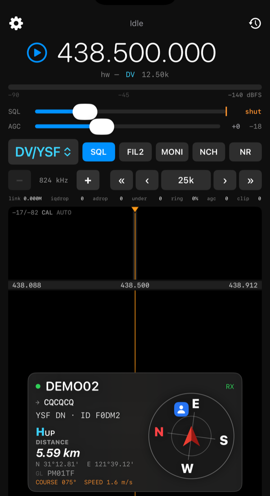
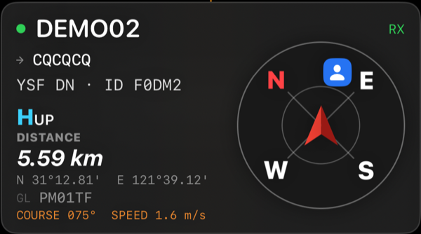
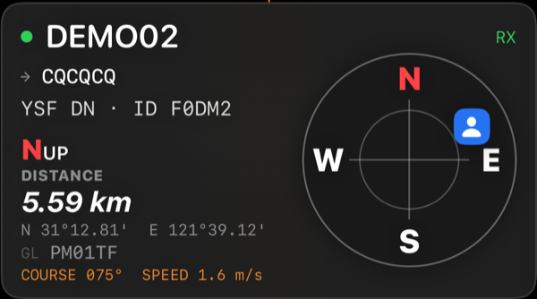
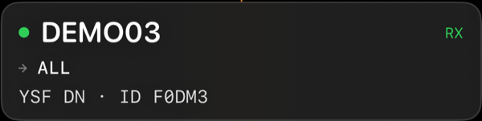
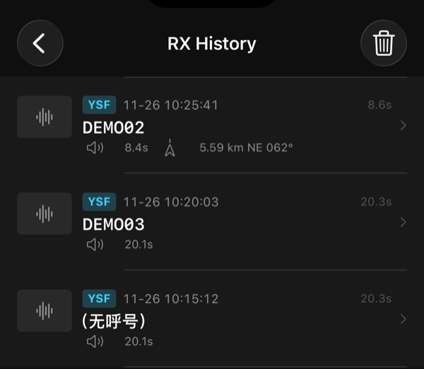
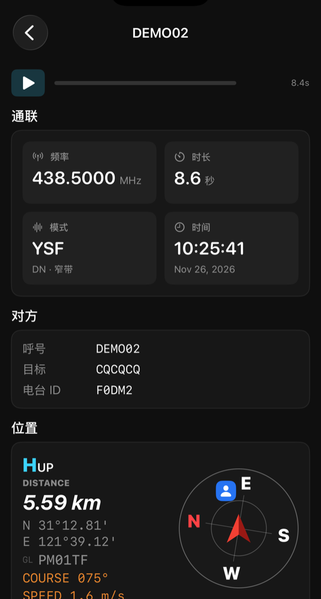
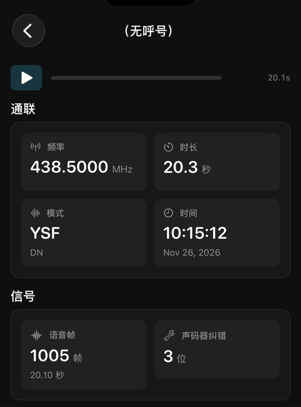

YSF digital voice (System Fusion)
System Fusion (YSF, or C4FM) is Yaesu's digital voice mode. SDRViewer receives it exactly as it receives D-STAR: the same Digital mode, the same card, the same RX History. You hear the voice and see the callsign, the radio's ID and the position. The DN and VW voice formats are supported.
Getting started
- Tune to a YSF frequencyOn the Receiver page, enter the frequency: a local C4FM simplex channel, or a YSF repeater's output.
- Choose DigitalTap the blue mode button on the left and choose Digital. D-STAR and YSF need no separate choice: each signal carries its own check and the app recognises which it is. NFM is the same: a digital transmission turns the button to Digital, and analogue FM turns it back to NFM and plays, like the AMS on a Yaesu mobile.
- Press play and wait for a transmissionWhen somebody transmits, a card appears at the bottom of the page and the decoded voice plays.
The frequency has to be right. As with D-STAR, a receiver that is off frequency decodes nothing. Do the frequency calibration first; a handheld within a few metres of the receiver is also too strong to decode.
The card during a voice transmission


First line: the station's callsign. The green dot and the RX at the right mean it is being received now.
→ CQCQCQ: who is being called. All asterisks is a call to everybody; a value starting ID means the station called by radio ID.
YSF DN · ID F0DM2: the format and the transmitting radio's five-character ID. DN shares the channel between voice and data and is what Yaesu radios use by default; VW is full-rate voice, better audio and no data. A DG-ID, when the station set one, is shown here too.
Position (only when the station's radio has GPS on): HUP / NUP is how the compass is turned (below); DISTANCE is how far the station is from you; beneath are its coordinates and grid locator (GL) and its own course and speed (COURSE / SPEED).
The compass: HUP and NUP
The compass is drawn the way Yaesu radios draw their navigation screen: the blue person marks where the other station is, and the red arrow is you.

| Mode | What you see | When |
|---|---|---|
| HUP (heading up) | The red arrow always points up: it is the way your phone points. N/E/S/W and the blue person turn as the phone turns. Turn until the person is at the top and you are facing the station. | The phone has a compass, and under My position in the settings both 表盘随手机朝向转 (dial turns with the phone) and 跟随我的位置 (follow my location) are on. |
| NUP (north up) | N stays at the top and the dial does not turn; there is no red arrow. | No compass (a Mac, some iPads), or the dial is not set to turn with the phone. |
Distance and direction are measured from your position. Enter coordinates or a grid locator under My position in the settings, or turn on following your location. Without it the card shows the station's coordinates and no compass or distance: a distance from a guessed position would be wrong.
When the station sends no position

If the station's radio has GPS off, or has no fix yet, the card has three lines — callsign, who is called and the format — and no compass. The voice plays as usual.
When there is no callsign
If the data carrying the callsign fails its check (usually a weak signal), no card appears during the transmission, but the voice is still decoded and played. When it ends, the transmission is kept in RX History as （无呼号）, “no callsign”, and can be played back.
RX History: what was received
Tap the clock at the top right of the Receiver page. YSF and D-STAR records share one list, tagged YSF or DSTAR, newest first.

The marks are the same as for D-STAR: a speaker and seconds mean there is voice, and after the tower icon are the station's distance and direction. Tap a record for its details; swipe left to delete one; the bin at the top right clears them all.
A record with a position

At the top is the play button, which plays the voice back. Below it, as for D-STAR, are the Contact, Station, Position and Signal cards; the mode tile reads YSF with DN or VW beneath. The fields only YSF has:
| Field | Meaning |
|---|---|
| Format | DN or VW, with “narrow” when the station used narrow mode. |
| Radio ID | The station radio's own five-character ID, which every Yaesu radio has from the factory. |
| DG-ID | Only when the station set a DG-ID (digital group). |
| Uplink / downlink | The repeaters the signal went in and came out of, through a repeater or a WIRES-X node. |
| Position | The same compass, distance, coordinates, course and speed as the card; the format line reads YSF DT, the GPS carried in the data frames. |
| Voice | Voice frames, length, and the errors the vocoder corrected — fewer means a cleaner signal. |
A record with no callsign

Only the mode, frequency, time, duration, format and voice remain, and the voice can be played back.
Common situations
| What you see | Cause and remedy |
|---|---|
| A signal on the waterfall, but no card and no sound | Off frequency: do the frequency calibration. Or too strong: move away from the transmitter. Or it is not a YSF or D-STAR signal. |
| Sound but no card | The callsign was not received; see “When there is no callsign” above. |
| No compass on the card | The station has GPS off, or you have not entered your own position. |
| The compass is always NUP | The device has no compass, or 表盘随手机朝向转 is off. |
| DW transmissions show nothing | DW (full-rate data) carries no voice and is not decoded yet. |